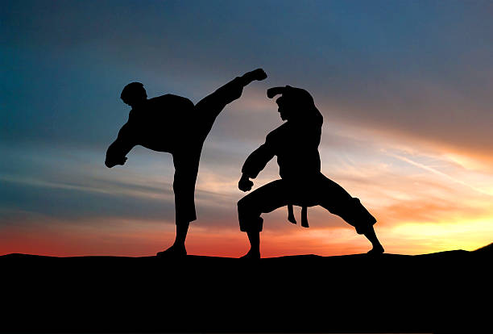

If you believe the end of the century would kickstart the decline of martial arts film popularity then you'd be dead wrong. The 90s were considered a masterclass of filmmaking and still considered to be part of the golden era of kung fu filmography. By this point, the East and West have effectively merged together for the greater sake of kung fu and action filmmaking. In fact, by this point, the exact genre of kung fu film takes on a more broader scope as they begin to bleed into the grander scale of action genre.
By this point, while kung fu films still held strong, the pure martial arts movie existence gradually began to give way to the greater action sphere. Science Fiction and general movies that merely included martial arts and kung fu as opposed to movies that centered around the topic had started to become the focal point. East and West maintained great synergy with one another and continued to only improve with the coming years. Western directorial influences coupled with the astonishing work and craft of Eastern actors would birth an era of filming with a level of physical action that arguably remains unrivaled to this day. Most classic kung fu actors would find a new home in the Hollywood styled 90s action film age as either choreographers or special roles in front of the camera to bring the action to a high that wouldn't exist without them.
Tai Chi Master
Fist of Legend
Drunken Master II
Wing Chun
Dragon: The Bruce Lee Film
Iron Monkey